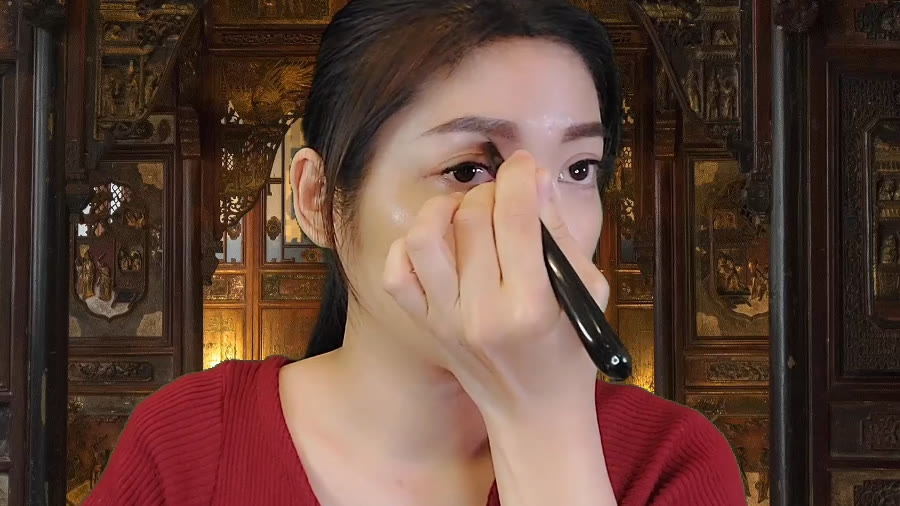

The Bojin Journal · The method
How to Hold the Handle: The Grip Behind a Steady Stroke

I can tell how a new student's session is going to feel before she makes a single stroke, just by watching her pick up the tool. If her knuckles go pale and her fingers wrap tight around the handle, I already know her wrist will lock, her strokes will feel jerky, and by the end her hand will ache. Everyone asks me about the angle of the working end. Almost nobody asks about the end already sitting in their hand.
So here's the idea before the detail: the angle articles I've written are about the end touching your skin. This one is about the other end, the handle, and how you hold it. Hold it too tight and every other part of the technique gets harder than it needs to be. Hold it right, and your wrist does the fine work your whole arm was straining to do before.
The grip that works: loose, like a pencil
Let the handle rest mostly in the soft web between your thumb and first finger, with your remaining fingers curled around it lightly rather than clamped. It's the same hold most people already use for a pencil, and for the same reason: it lets small, precise wrist movements happen without your whole hand fighting itself. You should be able to give the tool a gentle wiggle without it feeling like it might slip. That little bit of looseness is exactly right.
Why a tight grip works against you
A tight fist around the handle does one thing above all else: it locks your wrist. And a locked wrist can't make the small rotations that let the tool follow the angle changes across your face, from the flat plane of a cheek to the curve of a jawbone. So instead, your whole forearm has to move to compensate, which is heavier, less precise, and tires you out far faster. It also tends to spike your pressure without you noticing, since a clenched hand naturally pushes harder than a relaxed one.
A steady stroke doesn't come from a firm grip. It comes from a loose one that leaves your wrist free to make the tiny adjustments a firm hand can't. Grip supplies control, not force. The tool itself is light; you never need much hand strength to hold it, only enough to keep it from slipping.

Where your fingers sit changes with the work
You don't need a different grip for the broad edge and the rounded tip, but your hand naturally shifts along the handle for each. For the longer, sweeping passes of the broad edge, a slightly further-back hold gives you a bit more reach and a smoother arc. For the precise work of the rounded tip, most hands choke up a little closer to the working end, the way you'd hold a pen tighter to the nib for fine handwriting than for a quick signature. Let this happen on its own rather than forcing a rule onto it; your hand generally finds the right spot faster than your head does.
Check and reset your own grip
This takes under a minute and is worth doing before every session until the loose hold becomes automatic.

Notice your current grip
Pick up the tool as you normally would and look down. If your knuckles are pale or your fingers are wrapped tightly around the handle, that's your starting point.
Loosen to a pencil hold
Let the handle rest in the web between your thumb and first finger, with your other fingers curled lightly, not gripping. You should be able to wiggle the tool slightly without dropping it.
Test your wrist's freedom
With the new grip, rotate your wrist gently side to side. It should move easily. If it feels locked, loosen your hold further until the small rotation feels free.
The tell-tale sign you're gripping too hard
Your hand or forearm aching partway through a session is the clearest signal. A correct grip, held for five or ten minutes, shouldn't tire your hand at all, because it isn't doing muscular work, only steering. If cramping is a habit for you, it's almost always concentration turning into tension: you focus so hard on getting the angle and pressure right that your hand quietly clenches without you noticing. Pausing every minute or two to consciously loosen your hold breaks that pattern faster than trying to remember it the whole way through.
An honest note
Grip won't change what a session does for your face any more than the pen you write with changes what the words say. What it changes is how comfortably and precisely you get there, session after session, without your hand fighting you the whole way. That's a small thing that makes every other part of the method easier to do well.
Next session, before your first stroke, look down at your hand. Loosen it one notch more than feels natural. That one small adjustment is where a steadier session starts.
Quick answers
What's the correct way to hold a bojin stick?
Loosely, the way you'd hold a pencil, with the handle resting mostly in the fold between your thumb and first finger and your other fingers curled lightly around it. Your wrist should be able to rotate freely. If your knuckles are white or your forearm feels tight after a minute, the grip is too tight.
Why does a tight grip make sessions feel worse?
A tight grip locks your wrist, so instead of the tool rotating and following the angle changes across your face, your whole arm has to move to compensate. That shows up as jerky, inconsistent strokes and pressure that spikes without you meaning it to. A relaxed grip lets small wrist movements do the work smoothly.
Does grip change between the broad edge and the rounded tip?
The hold stays largely the same, loose and pencil-like, but you naturally choke up a little closer to the working end for the precise tip work, and hold a bit further back on the handle for the longer, sweeping passes with the broad edge. Let your hand find that adjustment; it usually happens on its own.
My hand cramps partway through a session. What's wrong?
Almost always a grip that's tighter than it needs to be, often from concentrating hard on getting the technique right. Pause, shake your hand out, and consciously loosen your hold before continuing. If cramping keeps happening, shorten sessions until the looser grip becomes a habit.
See the relaxed grip in action
A loose, steady hold is easier to see than to describe. My free 3-minute video shows the grip up close through a full session, so your hand can copy what a page of words only points toward.
Watch the free 3-min videoYu-Ting Lan is a Taiwan-based international bojin instructor and the founder of Héhé Studio. She has taught her bojin method to more than a thousand students, from complete beginners to grandmothers, across Taiwan, Hong Kong, and Malaysia.